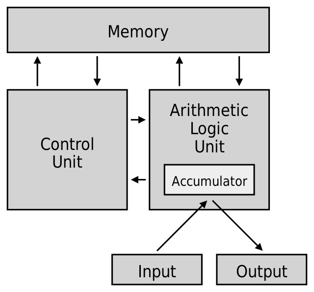

CPU (Central Processing Unit)
CPU merupakan otak dari komputer yang bertanggung jawab untuk mengolah data dan menjalankan program-program yang diperintahkan oleh pengguna.
CPU merupakan otak dari komputer yang bertanggung jawab untuk mengolah data dan menjalankan program-program yang diperintahkan oleh pengguna.
| Kompnen CPU | Fungsi |
|---|---|
| Arithmetic and Logic Unit (ALU) |
|
| Control Unit |
|
| Registers |
|
| CPU Interconnections |
|